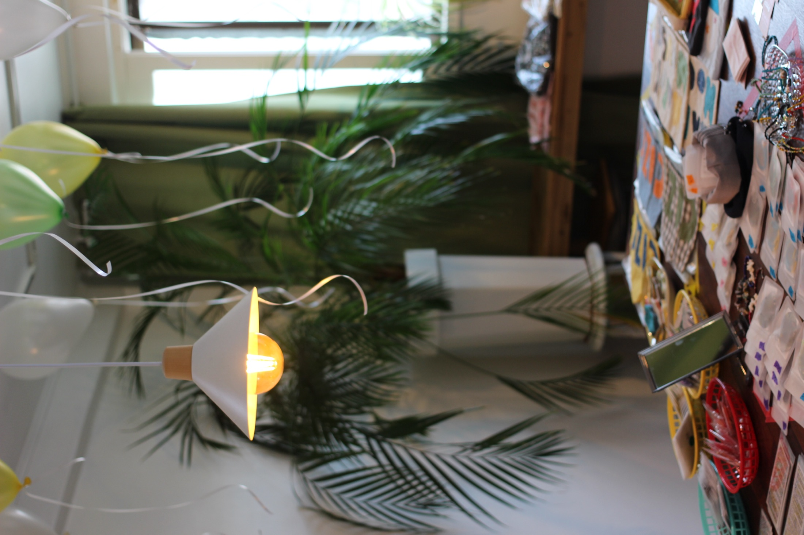
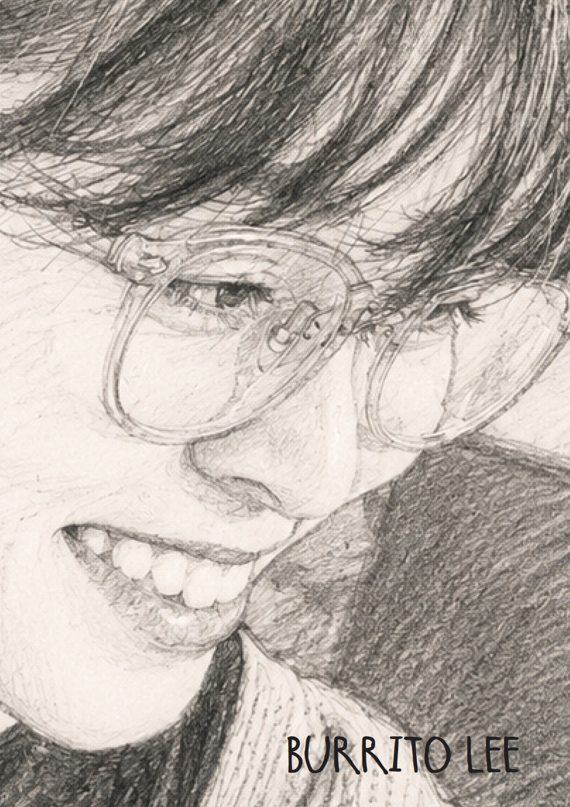
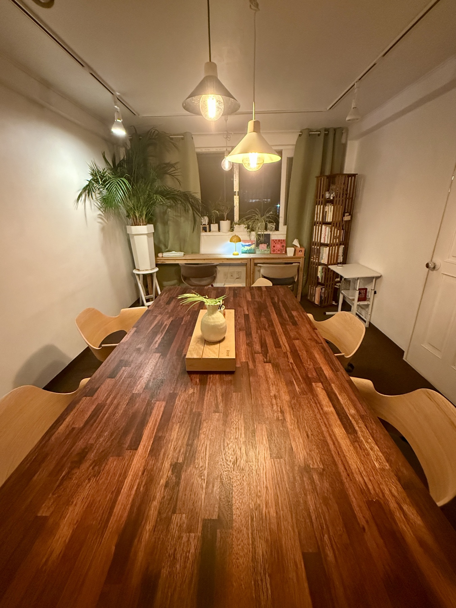

우리는 진짜를 믿습니다
우리는 완벽함보다 진심을 믿습니다. 화려한 말과 포장보다 사람 안에서 흘러나오는 진짜 온도에 더 마음이 갑니다.
우리는 그런 진짜의 이야기를 담고 싶습니다.SEOUL · ISSUE 01
VISIT ↘
A PLACE TO PAUSE
AND BEGIN AGAIN
OUR PHILOSOPHY
우리는 완벽함보다 진심을 믿습니다. 화려한 말과 포장보다 사람 안에서 흘러나오는 진짜 온도에 더 마음이 갑니다.
우리는 그런 진짜의 이야기를 담고 싶습니다.거대한 이름이나 멋진 외형보다 우리를 움직이는 것은 결국 사람입니다. 자신의 연약함을 외면하지 않고, 미숙해도 진심으로 살아가려는 사람들.
우리는 그런 사람들의 목소리에 귀 기울이고 싶습니다.세상에는 수많은 말과 기준이 있지만, 우리가 붙드는 기준은 사랑입니다.
사랑이 있으면 진짜이고, 사랑이 없으면 가짜입니다.인투뎀은 머무르기 위한 공간이 아니라 다시 세상으로 나아가기 위한 작은 장막이 되고자 합니다.
우리는 사람들의 아픔과 슬픔을 회복과 희망으로 바꾸어주는 장막이 되고 싶습니다.다른 눈으로 세상을 보고, 다른 말로 세상을 기록하는 곳이 되기 위해 노력합니다.
우리는 이곳을 통해 일어나는 변화들을 이야기하는 곳이 되겠습니다.WELCOME TO INTOTHEM
인투뎀은 사람을 만나고, 이야기를 듣고, 함께 성장하는 공간입니다.
상담과 모임, 출판을 통해 평범하지만 소중한 삶의 이야기를 기록하고 연결합니다.
CHOOSE YOUR PATH

INTOTHEM COUNSELING

INTOTHEM PLACE

INTOTHEM BOOKS
NOW AT INTOTHEM